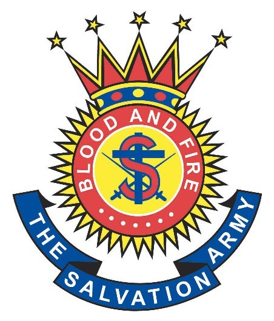
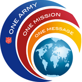

Mission
Vision
Mission

The Salvation Army, which is an international movement, is part of the evangelical universal Christian Church. Our message is based on the Bible and our Ministry is motivated by the love of God.
The Salvation Army's mission is both practical and spiritual:
- Using the power of Holy Spirit to transform lives
- Meeting variety of human needs wihout making any discrimination
- Sharing the gospel of Jesus Christ
- Caring and helping people in God's name
Vision

ONE ARMY: We convinced our calling and moving forward together
We will...
- To unite ourself in prayer
- To develop and identify with the leaders
- To increase self-denial and self-support
- To strengthen our spiritual life
ONE MISSION: Where the world is fill with broken, hurting, lonely, lost and dispossessed, we will reach them with all means
We will...
- Inspire innovation for the mission
- Hightlight our integrated ministry
- Serve and stand for the marginalised people
- Involve and reach the children and youth
ONE MESSAGE: With the message of Jesus Christ in bringing hope, life and freedom
We will...
- Maintain our belief with the transformation
- Disciple as well as evangelise effectively
- Providing with good teaching resources
- Communicate with Christ